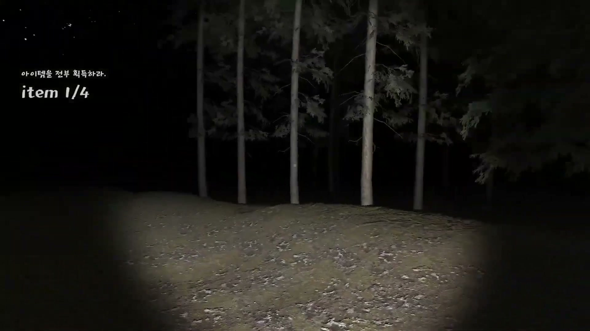

Experience
Search a dark forest for keys and supplies while avoiding a threat and finding a way to escape.

Description
The Silence Forest uses restricted visibility and a woodland setting to make exploration tense. The player must inspect the environment for useful objects without losing track of the danger around the character.
Keys, supplies, and the escape objective connect the forest scene to a concrete game loop. The actual project footage shows the first-person view, the environment, and the on-screen item progress.
Detailed features
Forest exploration
The environment provides the playable or visual setting. Landforms, landmarks, and surface detail give the space structure and make routes through it recognizable.
Keys and survival supplies
A visible status value communicates the character’s condition. Changes in that value give actions consequences and make survival or recovery part of the play loop.
Threat avoidance and escape
The player reads a moving or hidden threat and chooses a safer position. Avoidance makes timing and route selection central to completing the objective.
Build summary
The Unity source separates the project into runtime C# components. The saved code includes rigidbody physics, collision / trigger events, animation control, raycast interaction, scene flow. The script examples below identify concrete parts of this project’s implementation.
- Technology
- Unity
- Scope
- Unity project
- Presentation
- 1920 × 1080 · source quality
Implementation examples
SavePlayerData.csPlayer_Dead_Trigger.csAudioManager.csItem.csLoadScene.csQuest_Text.cs
Feature video
Project recording · 1920 × 1080 · Original resolution